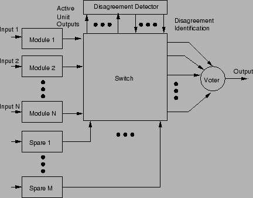
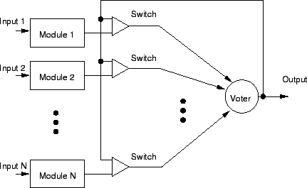

Next: กิจกรรม
Up: ระบบที่คงทนต่อความเสียหาย
Previous: ระบบสำรองพร้อมทำงาน
Contents
Index
ระบบคงทนต่อความเสียหายแบบอื่นๆ ได้แก่
- ระบบสำรองแบบจับคู่ (Pair and a Spare)
แสดงในรูป 9.15
- ระบบ NMR ที่มีการสำรอง
แสดงในรูป 9.16
- ระบบสำรองแบบจัดรูปแบบการทำงานของตัวเอง
แสดงในรูป 9.17
Figure 9.15:
ระบบสำรองแบบจับคู่ (Pair and a Spare)
|
|
Figure 9.16:
ระบบ NMR ที่มีโมดูลสำรอง
|

|
Figure 9.17:
ระบบสำรองแบบจัดรูปแบบการทำงานของตัวเอง
|

|
Vara Varavithya
2002-03-09
![\includegraphics[width=4.in]{fig/ft12pasp.eps}](img628.png)